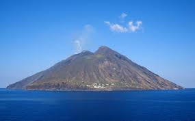

VULKANIZEM V ITALIJI
STROMBOLI

Stromboli je vulkanski otok visok 926 metrov, ki je prvič izbruhnil pred 2000 leti in takrat tudi nastal. Pred letom 1900 je na tem otoku živelo več tisoč prebivalcev, vendar jih je po emigracijah leta 1950 ostalo le še nekaj sto. Izseljevanje iz otoka je verjetno pospešila še vulkanska aktivnost, ter slab dostop do kopnega.